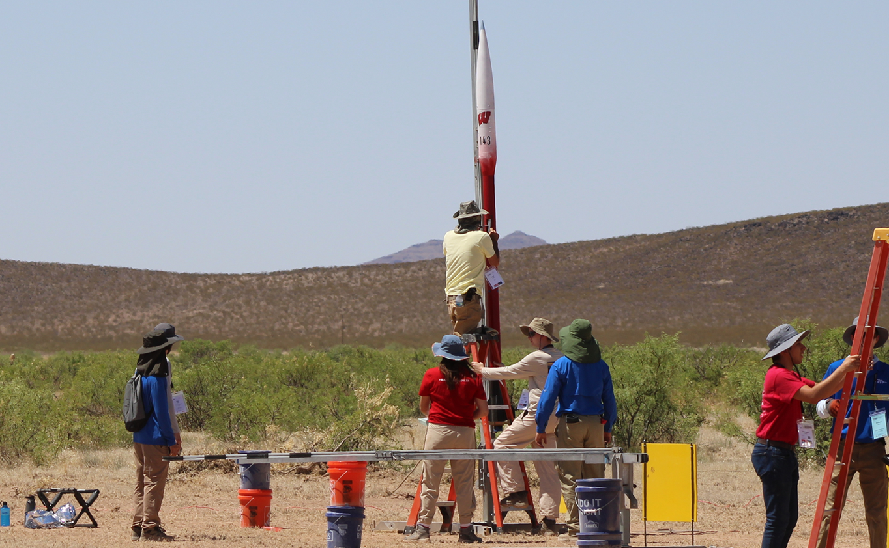
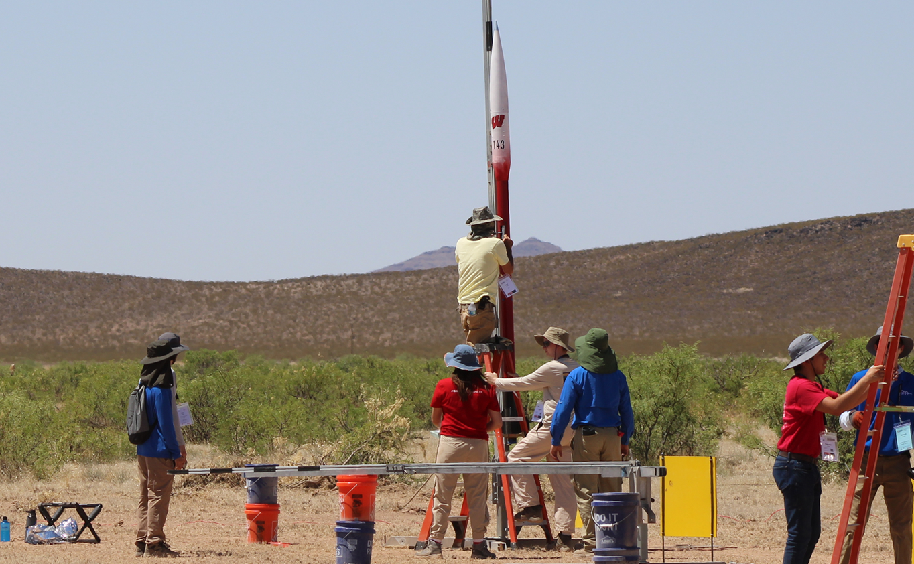
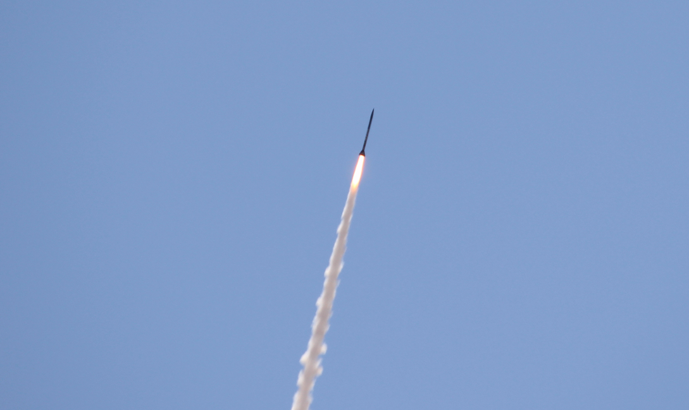

CURRENT PHASE:
PRE-LAUNCH
ALTO PREPARATIONS
Half Badger will be positioned for launch at the FAR-OUT Competition in Mojave, CA. Prior to flight, the ALTO team will perform a checklist of pre-launch operations.
Half Badger will be positioned for launch at the FAR-OUT Competition in Mojave, CA. Prior to flight, the ALTO team will perform a checklist of pre-launch operations.
Half Badger begins its ascent, rapidly hitting its peak thrust of 1000 lbf (around 4448 N).
Half Badger pushes through Max Q, hitting peak aerodynamic pressure just above 4000 feet in the air.
Around the same alititude, Half Badger's engine stops firing, marking the beginning of unpowered flight.
Half Badger is expected to enter transonic speeds, reaching its maximum velocity near burnout. This corresponds to slightly above the speed of sound.
Half Badger's velocity will continue to decrease for the remainder of its upward flight. It will transition back to subsonic speeds, while onboard electronics monitor for apogee.
At 20,000 feet in the air, Half Badger has reached its maximum altitude. This is roughly the height of seven Burj Khalifas stacked.
The ejection charges fire at apogee, and Half Badger's drogue chute deploys to slow its descent.
Half badger's descent slows for several thousand feet.
Several thousand feet later, the main chute deploys to futher slow the descent.
Scroll to Launch